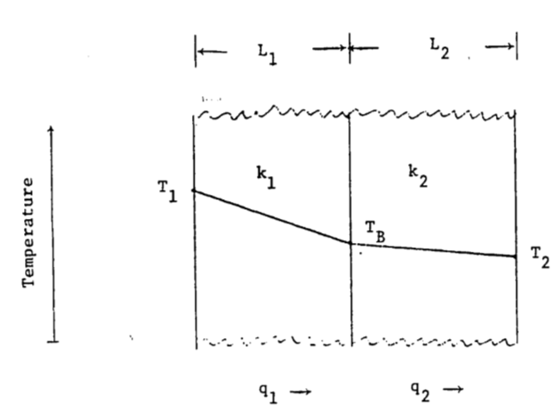

7.6 PROBLEMS
1a. To measure the oxygen consumption of resting homeotherms as a function of the thermal environment, animals are commonly placed in an environmental chamber where the air temperature can be changed and monitored. The results of the experiment are given as a plot of O2 consumption versus air temperature. Imagine that for some reason the wall temperature is not equal to the air temperature. Plot the radiation emitted by the wall per unit surface area, \(Q_{ew}\), as a function of wall temperature using Stefan-Boltzmann’s Law (assume emissivity equals 0.96).
1b. If the emissivity of an environmental chamber with plastic walls is 0.6 for longwave radiation what is its absorptivity to longwave radiation? Imagine that the air is much cooler than the animal’s surface. The radiation leaving the animal, incident on the walls, could heat the walls above the air temperature and increase the radiation incidence on the animal. Name two ways to avoid this problem. A chamber with metal walls will have a small emissivity (~0.15) to longwave radiation. What will be its reflectivity? What will happen to the radiation leaving the animal in this case? How can this effect be minimized?
2a. It is also possible to represent Planck’s Law as a function of frequency \(f\) rather than wavelength \(\lambda\): \[E_f=\frac{2\pi h}{C_L^2}f^3\bigg[exp(\frac{hf}{K_bT})-1\bigg]^{-1}\] Equation (7.1) of the text gives the relationship between \(\lambda\) and \(f\). Show how \(E_f\) and \(E_{\lambda}\) are related. What is the difference in dimensions between \(E_f\) and \(E_{\lambda}\)? The concept of wave number is often introduced to plot \(E_f\) and \(E_{\lambda}\) of the same graph. Wave number \(n = \lambda^{-1}\). How are \(f\) and \(n\) related? Plot \(E_{\lambda}\) and \(E_f\) for T = 280 K as a function of \(\lambda\). Repeat for T = 6,000 K but show both the \(\lambda\) and \(n\) scales. How does the relationship of bandwidth/wave number and bandwidth/wavelength change over the spectrum?
2b. Planck also found that the energy in a photon, \(e\), is proportional to its frequency (\(e = hf\)). What does this imply for a \(E_{\lambda}\) versus \(E_f\) representation? At what wavelength does the sun radiate the most energy? Assume its surface temperature is 6,000 K. How does this value compare with that in Fig. 7.4?
3a. Using equation (7.8), plot the heat of vaporization as a function of temperature. Schmidt-Nielsen (1975, page 313) says that \(580 cal \cdot g^{-1}\) is a commonly used value in physiology. Is this a good approximation? Evaluate the error over the range 0 to 40 °C.
- Schmidt-Nielsen (1975, page 37) gives the lung volume for mammals as a function of weight as \[V=0.0567M^{1.02}\] \(V\) is lung volume (liters) and \(M\) is body mass (kg).
If respiration rate (breaths min\(^{-1}\)) is a function of air temperature (for a moose (Belovsky 1978)), \[Br=7.72exp(0.07T_a)\] calculate the respiration loss in watts as a function of air temperature (\(T_a\) = -20 to 40 °C). Assume \(M\) = 358 kg, that the exhaled air is at air temperature, the relative humidity is 50 percent and \(L\) is constant at \(2.43 \times 10^6 J kg^{-1}\). Repeat the calculation for the exhaled air at \(\frac{T_a+T_b}{2}\).
Hint: The energy lost is equal to the net mass flow (the mass of water exhaled minus the mass of water inhaled per unit time multiplied by the latent heat of water). Convert the volume exchange to a mass exchange using the fact that concentration (mass/volume) of water is the product of the molecular weight, the vapor pressure of water at that temperature and the relative humidity divided by the product of the gas constant and the absolute temperature of the sample.
The rate of heat transfer by conduction depends on the potential (temperature difference), the area of contact and the conductivity of the material. Estimate the heat transfer between an animal and the ground for all combinations.
Surface temperature = 20 °C Ground temperatures = 2, 14, 27 °C Area of contact = 0.054 m\(^2\) Thermal conductivities = 0.02, 0.08, 0.17 W m\(^{-1}\) °C\(^{-1}\) Thickness of the material layer limiting heat flow = 0.005 m
5a. In the diagram, heat flows through two materials from the left boundary (temperature \(T_1\)) to the right boundary (temperature \(T_2\)). Assure steady state conditions.

How does the temperature drop at the boundary depend on thermal conductivity and the thickness of the material? Let \(\frac{k_1}{k_2}=a\) and \(\frac{L_1}{L_2}=b\); find \(T_B\). Let \(\frac{a}{b}\) and find \(T_B\). Plot \(\frac{T_B-T_2}{T_1-T_2}\). If \(a = 1.2\), \(b = 0.2\), \(T_1 = 40 °C\) and \(T_2= 10 °C\), in which material is the temperature gradient larger? Which material has the larger temperature drop? What is \(T_B\)?
In the conduction section of the text the heat flow between an alligator and the substrate was calculated. It was assumed that the heat flow into the rock was not important. Discuss this assumption with regard to part “a” of this problem.
Imagine that the alligator’s skin temperature is initially equal to the body temperature. How will the temperature profile change in the soil and in the animal as the heat exchange approaches a constant value?
- Kreith (1973) gives the following relationship for \(Nu\) and \(Re\) of cylinders: \[Nu=aRe^b\]
| Re | a | b |
|---|---|---|
| 0.4-4 | 0.891 | 0.330 |
| 4-40 | 0.821 | 0.385 |
| 40-4,000 | 0.615 | 0.466 |
| 4,000-40,000 | 0.174 | 0.618 |
| 40,000-400,000 | 0.0239 | 0.805 |
Assume that wind velocity is \(2 m s^{-1}\) and \(0.1 m s^{-1}\), the diameter is 0.46 m and 0.002 m. Compute he for the four combinations of diameter and wind velocity. Take \(v = 1.42 \times 10^{-5} m^2 s^{-1}\) and \(k = 2.50 \times 10^{-2} W m^{-1} K^{-1}\) at an air temperature of 10 °C.
7a. Calculate the heat transfer coefficient for a flat plate using \(Nu = 0.60 Re^{0.5}\) (Monteith 1973, page 224; Kreith 1973, page 341). Let air temperature be 20 °C, so \(v = 1.51 \times 10^{-5} m^2 s^{-1}\) and \(k = 2.53 \times 10^{-2} W m^{-1} K^{-1}\). How does this compare with the convection coefficient for the leaf? This is accurate for laminar flow \(Re < 2 \times 10^4\).
- Show the region \(Re < 2 \times 10^4\) on a graph of wind velocity \(V\) versus the characteristic length \(D\). When \(Re < 2 \times 10^4\), Monteith suggests \(0.032 Re^{0.8}\). How likely is this to occur naturally? Would a leaf be rigid in these wind speeds?
- In the text, we discussed the physical process of free convection. To determine the importance of free convection, one must compute the ratio of the Grashof number to the square of the Reynolds number. If the ratio is approximately 1, then free convection cannot be ignored. The Grashof number is
\(Gr=\frac{agD^3(T_s-T)}{v^2}\)
\(g\) = gravitational acceleration (\(9.8 m s^{-2}\))
\(a\) = coefficient of thermal expansion for fluid (a = 1/273 for air),
\(T_s\) = surface temperature (°C),
\(T\) = fluid temperature (°C),
\(v\) = kinematic viscosity (\(m^2 s^{-1}\)).
Plot \(\frac{Gr}{Re^2}\) on a graph of \(V\) versus \(D\). Let \(T_s - T\) equal 10, 20 and 30. Below the line \(Gr = Re^2\), free convection loss cannot be ignored. Is free convection important for leaves in the natural environment?
9a. The energy balance for fruits is important in both cultivated and wild plants because it affects when and at what rate the crop ripens. Grapes for instance must be picked at just the right time to insure the best sugar content for winemaking. McIntosh apples.need cold nights and warm days to be of the best quality. When weather conditions are unfavorable, fruit can become overripe or rotten before it is harvested. Wild plant fruits are an energy investment by the plant to attract seed dispersers. This is especially true of birds and bats in the tropics. The color of the fruit is often an important signal to a potential disperser while the size and spacing of the fruits will influence the animal’s harvesting rates. These same characteristics are important to the fruit’s thermal balance.
An empirical approach based on the “heat unit” or “growing degree day” concept has been developed to predict the harvest times. When the fruits have been exposed to x degree days the theory says they will he ready to pick. Degree days are computed as follows: \[DD=\sum\bigg[\frac{T_{amax}-T_{amin}}2-T_t\bigg]\] where \(DD\) is degree days, \(T_{amax}\) is the maximum air temperature during the day, \(T_{amin}\) is the minimum air temperature for the day and \(T_t\) is a threshold temperature specific for each species and which can be thought of as the temperature below which development is stopped. (The summation is over only positive values of the term). From the data below calculate the ripening degree days if \(T_t\) is 16 °C.
| Day | 1 | 2 | 3 | 4 | 5 | 6 | 7 | 8 | 9 | 10 |
|---|---|---|---|---|---|---|---|---|---|---|
| Tamax°C | 20 | 25 | 21 | 21 | 18 | 20 | 25 | 27 | 26 | 23 |
| Tamin°C | 16 | 18 | 14 | 13 | 10 | 12 | 15 | 18 | 18 | 16 |
What problems are there with this approach?
- A more mechanistic viewpoint should allow one to calculate the temperature of the fruit. As an example let us consider a spherical model 1, 4 and 10 cm in diameter. What is the heat energy balance for the fruit. Which terms are small and can be ignored? What terms are you unsure about? As a first approximation, let us start with the following model:
\[Q_a=Q_e+C\]
where
\(Q_a\) is absorbed radiation (Wm-2)
\(Q_e\) is reradiation (W m-2) and
\(C\) is convection (W m-2)
Under steady state conditions the temperature of the fruit core, \(T_f\), will equal the temperature of the surface. Therefore, \(Q_e=\varepsilon \sigma T_f^4\) and \(C=h_c(T_f-T_a)\). For forced convection about a sphere without the increased turbulence of the outdoor environment (Nobel 1975; Kowalski and Mitchell 1976; Monteith (1973, page 224) give two formulae for the relationship between the Nusselt and the Reynolds number.
| Range of Re | Nu |
|---|---|
| 0-300 | 2 + 0.54 Re0.5 |
| 50 - 1 \(\times\) 105 | 0.34 Re0.6 |
Calculate \(Nu\) by both formulae for \(Re\) = 50, 100 and 300. If \(D\) = 1 cm, what is the minimum wind speed for which the second relationship is valid? Which formula yields a lower heat transfer coefficient? What will the effect on the energy balance of the fruit be? Find \(h_c\) as a function of \(D\) (0.01, 0.04 and 0.1 m) and \(V\) (0.1, 1.0 and 10.0 m s\(^{-1}\)) if \(Nu = 0.34Re^{0.6}\). Assume \(v = 1.42 \times 10^{-5} m^2 s^{-1}\) for the entire problem.
For a sphere: \(Q_a=a_s[A_1S+A_2s+A_3r+(S+s)]+A_lA_l[R_a+r_g]\)
where
\(a_s\) = the absorptivity to shortwave radiation (assume 0.7),
\(A_1\) = the percent of the total surface hit by direct beam radiation weighted by the angle of incidence (equals \(\pi r^2/4\pi r^2=1/4\))
\(S\) = direct beam solar radiation (W m\(^{-2}\)),
\(A_2 = A_s = A_l\) = the percent of the total surface hit by the corresponding radiation sources (assume 0.5),
\(s\) = diffuse shortwave radiation (assume = 0.1 of total shortwave radiation \(R_p\), \(W m^{-2}\))
\(r\) = reflectivity of the ground (assume 0.15),
\(a_l\) = absorptivity to longwave radiation (assume 1.0),
\(R_a\) = longwave radiation from the atmosphere (W m\(^{-2}\)), and
\(R_g\) = longwave radiation from the ground (W m\(^{-2}\)).
From Morhardt and Gates (1974, page 20, Fig. 2c), I have taken \(R_p\), \(R_a\) and \(R_g\) for a sunny day and converted the units to W m\(^{-2}\) as tabulated below:
| Hour of the day | \(R_p\) | \(R_a\) | \(R_g\) | \(T_a\) |
|---|---|---|---|---|
| (W m-2) | (W m-2) | (W m-2) | (°C) | |
| 7 | 35 | 223 | 335 | 7.5 |
| 8 | 593 | 223 | 348 | 10 |
| 9 | 837 | 230 | 369 | 12 |
| 10 | 1012 | 237 | 419 | 15 |
| 11 | 1116 | 244 | 461 | 19 |
| 12 | 1186 | 251 | 502 | 24 |
| 13 | 1116 | 258 | 481 | 27 |
| 14 | 1012 | 251 | 461 | 25 |
| 15 | 837 | 244 | 419 | 22 |
| 16 | 593 | 237 | 391 | 16 |
| 17 | 35 | 237 | 363 | 12.5 |
| 18 | 0 | 230 | 349 | 10 |
Calculate \(Q_a\) values for each hour of the day. What part of this is shortwave radiation?
Assuming that the wind speed is 1.0 m/s and that the diameter of the fruit is 0.04 m and using the convection coefficient you have derived, calculate the fruit’s equilibrium temperature for each hour of the day. Using \(Q_a\) and \(T_a\) values for 7 and 12 o’clock calculate the equilibrium fruit temperature for all combinations of \(V\) = 0.1, 1.0 and 10.0 m/s and \(D\) = 0.01, 0.04, 0.10 m. Size and wind speed affect the fruit temperature in opposite ways at the two times. Why is this? What are the problems with this approach?
- Discuss the following group of papers concerning heat transfer in biology:
Strunk, T. H. 1971. Heat loss from a Newtonian animal. J. Theoret. Biol. 33:35-61.
Kleiber, M. 1972. A new Newton’s Law of cooling? Science 178:1283-1285.
Tracy, C. R. 1972. Newton’s Law: its applicability for expressing heat losses from homeotherms. BioScience 22:656-659.
Technical Comments: Perspectives of linear heat transfer: T. H. Strunk, C. R. Tracy, M. Kleiber. Science 181:184-186.
Linearized heat transfer relations in biology. G. S. Bakken and D. M. Gates; T. H. Strunk; M. Keiber. Science 183:976-978.
Bakken, G. S., and D. M. Gates. 1974. Notes on “Heat loss from a Newtonian animal,” J. Theoret. ’Biol. 45:283-292.